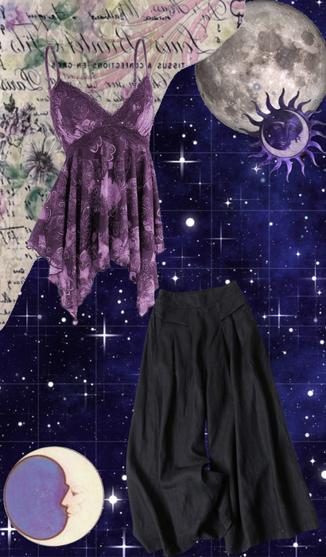
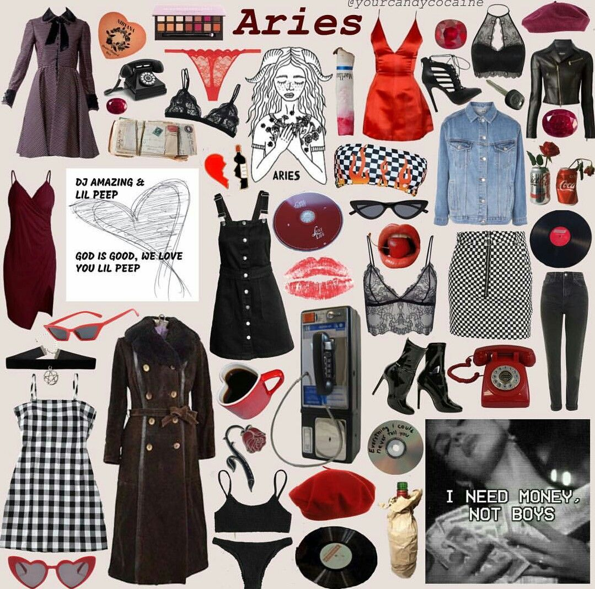

CodePath
The organization behind this course — learn more about their programs!

LunaLook helps you pick the perfect outfit based on the moon's astrological placement each day. Whether you're into astrology or just want fresh style inspiration, let the lunar energy guide your look!

Outfit: Bold reds, leather jackets, and sneakers. Channel your inner warrior!
Style Tips: Go for sporty, energetic looks. Don't be afraid to stand out.

Outfit: Earthy neutrals, cozy knits, and comfortable denim.
Style Tips: Prioritize soft fabrics and timeless pieces. Less is more.
Outfit: Mix and match prints, layered accessories, and fun colors.
Style Tips: Try two contrasting styles together — Gemini loves a duo!
Outfit: Soft pinks, flowy dresses, and elegant accessories.
Style Tips: Balance is key — pair something casual with something dressy.
Outfit: All black everything, deep burgundy, or moody jewel tones.
Style Tips: Go mysterious and sleek. A bold lip or dark nail goes perfectly.
Outfit: Dreamy pastels, flowy fabrics, and iridescent accessories.
Style Tips: Think ethereal and soft. Layered sheer fabrics work beautifully.
The organization behind this course — learn more about their programs!